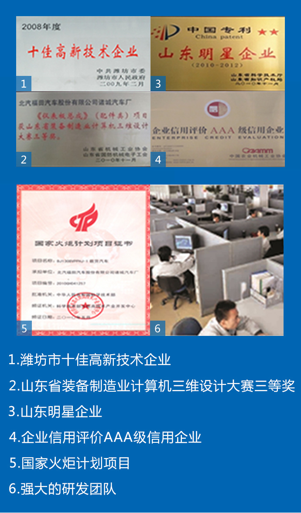

时代/瑞沃汽车研发理念
依托福田汽车国家级工程技术研究院，建立起了国内同行业一流的技术研究中心，是集产品概念研究、产品工程开发、产品试制试验和认证为一体的综合性研发机构，420余人的研发团队具备先进的开发手段，产品全部采用PRO/E、UG、CAD、CATIA等实施开发，实现了产品的动态模拟分析技术和100%整车自主基本性能试验。
技术研究院长期与国家级权威检测机构进行合作（如国家轿车质量监督检验中心、长春认证中心、重庆客车认证中心、济南重型车认证中心等）以及国内高校合作（如吉林大学、南京航空航天大学等），凭借一流的人才资源、专业而细分的组织机构、现代化的管理体系和先进的技术手段，研发出了大量的具有高品质、高性价比的产品。
技术研究院拥有自主知识产权的专利技术，多个项目填补了国内空白，先后荣获“潍坊市十佳高新技术企业”、“全国产品质量监督抽查合格企业”、“山东省机械工业百强企业”、“山东省诚信企业”、“山东明星企业”、“山东省文明单位”、“企业信用评价AAA级信用企业”等荣誉称号。
2015年完成新产品开发277项，其中时代业务140项，瑞沃业务136项，CEV业务1项，海外业务10项。截止 2016年6月份，新产品开发200项，其中微卡48项，轻卡62项，中重卡90项。
